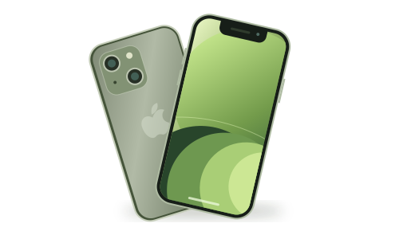
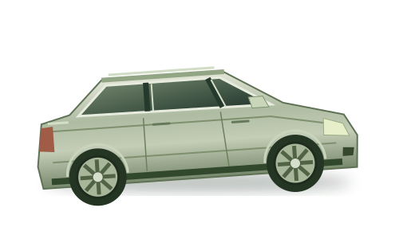

Ваше время — снова ваше
Поиск продолжается, пока вы работаете, отдыхаете или занимаетесь своими делами.
ВАШ ПОИСК. НА АВТОПИЛОТЕ.
Узнавайте о новых объявлениях, пока другие обновляют страницу. SaleMonitor следит за поиском и присылает находки в Telegram.
Попробовать бесплатно3 дня бесплатно· Всё работает в Telegram
Иллюстрация работы сервиса. Объявления — примеры.
Весь поиск —
в одном Telegram
МЕНЬШЕ РУТИНЫ. БОЛЬШЕ НАХОДОК.
Открыть пять вкладок. Обновить выдачу. Повторить через час. И обнаружить, что нужную вещь уже забрали.
Поручите эту работу SaleMonitor. Он регулярно проверяет ваши запросы и отправляет новые объявления прямо в Telegram. Вы тратите время только на то, что вам интересно.
Поиск продолжается, пока вы работаете, отдыхаете или занимаетесь своими делами.
Проверка каждые 10, 30 или 60 секунд — без ожидания очередной подборки из избранного.
Объявления с разных площадок приходят в привычный Telegram. Не нужно обходить их вручную.
ПРОЩЕ, ЧЕМ ОБНОВЛЯТЬ ВКЛАДКИ
Откройте SaleMonitor в Telegram и зарегистрируйтесь. Все настройки — прямо в диалоге.
Выберите площадку, задайте запрос и фильтры. Скопируйте ссылку на результаты и отправьте боту.
Мониторинг начинается после добавления поиска. Появится новая находка — узнаете в Telegram.
ЧТО ИЩЕМ СЕГОДНЯ?
Для коллекционеров, перекупщиков
и всех, кто знает, чего хочет.
Редкое издание, монета, винтажная техника. Следите за несколькими площадками, пока коллекция ждёт пополнения.
Меньше пропущенных лотовХорошие предложения быстро разбирают. Узнайте о новом объявлении и свяжитесь с продавцом без посредников.
Скорость, которая даёт преимущество
Выберите модель, состояние и бюджет. Вместо ежедневного просмотра выдачи получайте подходящие новые объявления.
Покупка без бесконечного скролла
Редкий двигатель, нужный цвет, конкретный год. Ждите свой автомобиль спокойно: поиск не требует вашего участия.
Терпеливый поиск точного совпаденияВЫБЕРИТЕ СВОЙ ТЕМП
попробуйте бесплатно,
затем выберите тариф
между проверками поиска
Для неспешного поиска.
Нужное появится — вы узнаете.
Первые 3 дня — бесплатно
между проверками поиска
Для активного поиска редкостей
и выгодных предложений.
Первые 3 дня — бесплатно
между проверками поиска
Для тех, кому важно заметить
объявление как можно раньше.
Первые 3 дня — бесплатно
Интервал — частота проверки площадки. Время доставки уведомления также зависит от самой площадки и Telegram.
SaleMonitor проверяет поисковую выдачу с выбранным интервалом — 10, 30 или 60 секунд. Вы не зависите от расписания подборок площадки, а новые объявления с разных сервисов получаете в одном Telegram.
Достаточно Telegram. Регистрация, добавление поисковых ссылок и уведомления работают через @SaleMonitorBot. Держать браузер или компьютер включённым не нужно.
Авито, Юлу, Yahoo! Auctions, eBay и другие площадки. Отправьте боту ссылку на поисковую выдачу нужного сервиса — подключение начинается с неё.
Сначала настройте поиск на самой площадке: запрос, категорию, цену, регион и другие доступные фильтры. Затем скопируйте ссылку на получившуюся выдачу и добавьте её в бота.
Быстрое уведомление даёт возможность раньше связаться с продавцом. Покупка зависит от его ответа, других покупателей и ваших договорённостей. SaleMonitor помогает вовремя заметить объявление; решение о сделке остаётся за вами.
Да, первые 3 дня бесплатны. Добавьте свой поисковый запрос и посмотрите, как приходят новые объявления. Для дальнейшего использования выберите подходящий интервал проверки: 60, 30 или 10 секунд.
ВАША СЛЕДУЮЩАЯ НАХОДКА УЖЕ ГДЕ-ТО РЯДОМ
Добавьте первый запрос.
Остальное SaleMonitor возьмёт на себя.